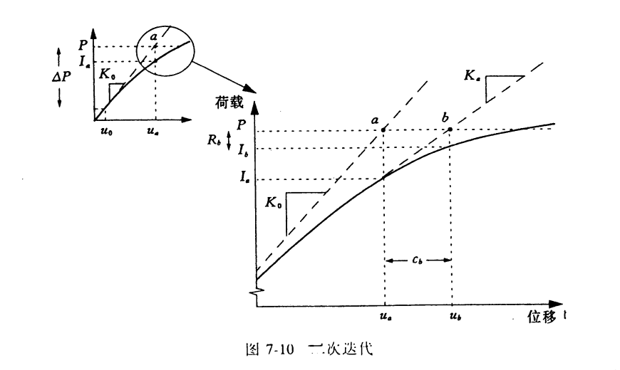
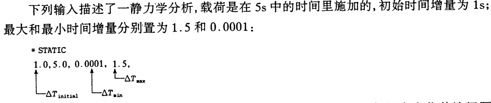
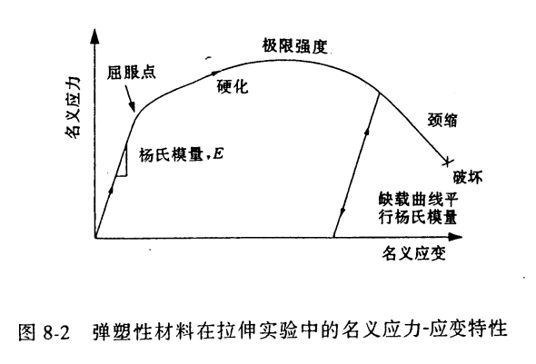
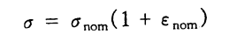
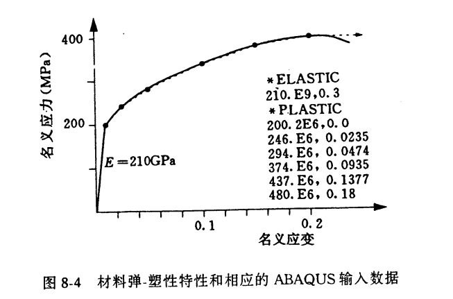

目录
Abaqus 弹塑性和增量控制
abaqus 的自动增量控制
abaqus求解时,会根据迭代情况自动缩放增量步大小。默认设置是,在当前增量步,如果16次迭代依旧不收敛或发散,abaqus会减小为25%增量步重新开始增量步计算。如果还不收敛,就再次减小为25%; 这样连续5次尝试都不收敛,就会中止计算。
若增量步内迭代5次就收敛,说明解比较容易找到;如果连续两次增量步都少于5次迭代,abaqus下一增量步步长提高50%

当惯性效应或者率相关效应可以忽略时,增量步时间是没有物理意义的。对于大小为P的加载,初始载荷增量为:

单元局部材料方向
几何非线性计算的时候,梁/壳单元的局部坐标会随变形而转动;实体单元使用了*ORIENTATION关键字定义局部坐标时,局部坐标会随变形而转动,否则一直不动。
在节点上用*TRANSFORM关键字定义的局部坐标不会随变形而转动。
延性金属的塑性定义
大多数的材料屈服应力大约在杨氏模量的0.05%~~0.1%;

abaqus使用*PLASTIC关键字可以定义屈服点之后的后屈服应力-应变曲线;需要注意的是:在CAE中要填写一系列的<真实屈服应力,真实塑性应变>。真实应力,应变与工程应力应变的关系是:

*PLASTIC的数据行: 初始真实屈服应力,真实塑性应变 …,…
- 真实塑性应变计算公式:
真实塑性应变=真实应变-（真实应力/杨氏模量）
例如:

适合弹塑性问题的单元
金属塑性变形具有不可压缩性,因为模拟不可压缩特性会增加单元运行约束,这种约束可能会导致体积锁死,即材料响应过于刚硬,表现形式就是单元之间的静水压应力快速变化
完全积分的一次单元不会体积锁死,可用于塑性模拟;而完全积分的二次单元不能用于塑性模拟;C3D8R不会过度约束,适用于大多塑性模拟;也可以使用C3D20R,但应变达到0.2-0.4时,可能产生体积锁死;